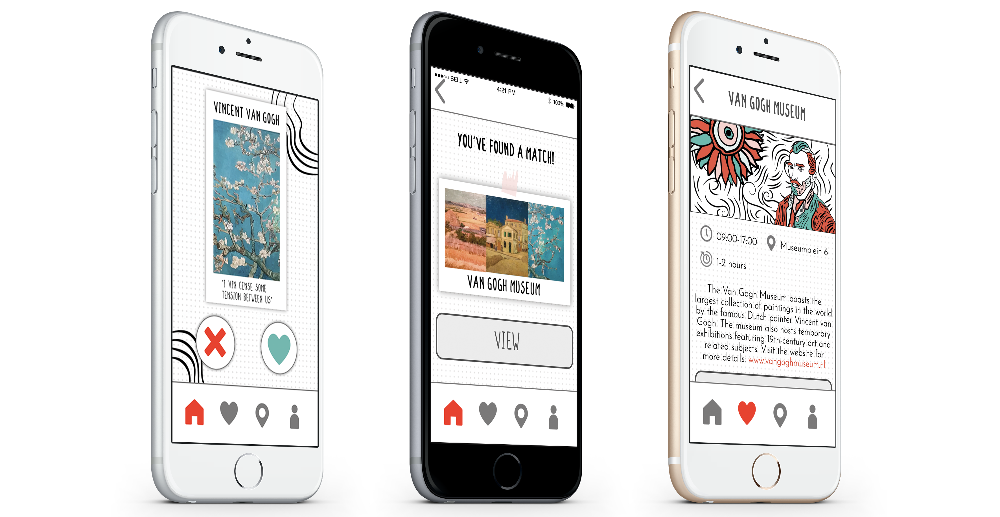

Museum Match
Find your next favorite museum in Amsterdam!
ROLE
UX/UI, VISUAL, FRONT-END
CONTEXT
SCHOOL PROJECT
PERIOD
2019
Introduction
Museum Match was designed to be in the style of the paper ISGA-guide made by minor-students of the HvA. The ISGA guide is targeted towards international exchange-students that live in Amsterdam to study. This static prototype built with HTML and CSS is a Tinder-like system that familiarizes the new international students with the different kinds of museums and artworks in Amsterdam.
Go to RespositoryProcess
This project started off with analysing interviews of international students that live in Amsterdam. The questions were all about what surprised them about the city and what the ‘tips and tricks’ were for students like them.
Immediately I knew: I want to create an application that gets young, international students in touch with the amazing museums this city has to offer.
For this project I:
- created my own version of the Style Guide of ISGA
- made my own illustrations
- made a flowchart
- took pictures of the artworks that are in the app
- coded a static prototype using HTML & CSS
End Result
I created a concept that is basically Tinder for museums in Amsterdam. For international exchange-students this is a very accessible way to let them get into contact with the museums.
The navigation in Museum Match is quite easy to understand. By using preselection during onboarding the user can fill in their interests and get the best artwork recommendations.
If you have an account, you can like a few artworks and find a match after you’ve liked three artworks of the same exhibition.
 Visit Website
Visit Website